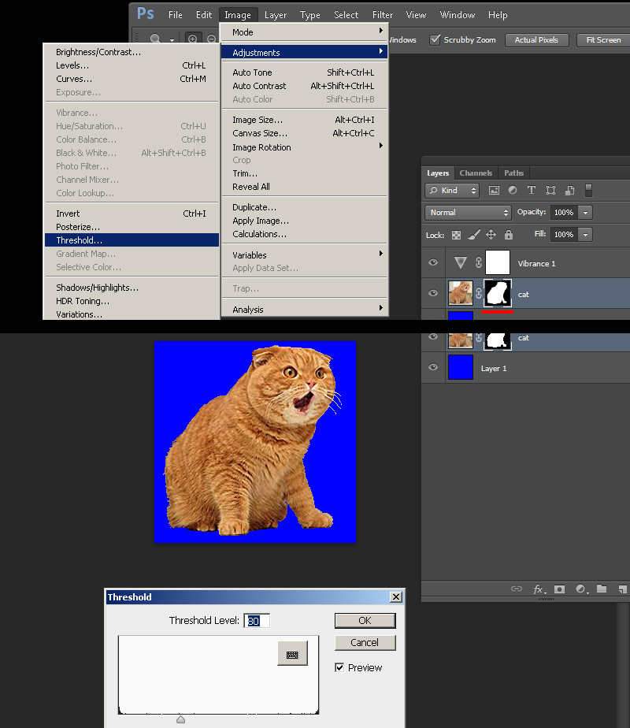
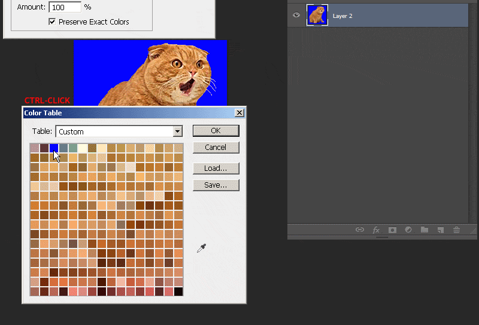

Transparent masked sprites use a solid color that is the last color of the indexed palette as the transparent mask. This 1bit transparency is also known as alphatest.
1) Get your image ready and create a selection from either lasso, quick select, pen, quickmask, ect. Create a clipping mask from this selection.
2) Create a layer below the masked image and then use the fill command (shift-F5) to fill that layer with pure blue RGB[0 0 255] or HEX:#0000ff.
3)select your clipping mask and go to Image > adjustments > threshold. You will now have a slider bar that you will adjust to set the hard threshold of your mask, this ensures you don't have any blending or aliasing which is bad for alphatest masked transparency. Do fine adjustments on this mask using the pencil tool (has hard edges to match requirements) with black or white.
NOTE: If your sprite image touches the edge of the document, you should put at least a 1px border of the transparency, this is because any pixels touching any side of the document can sometimes "wrap" to the opposite side of the image.

4) When finished convert the image to indexed color just like in Step1, only after choosing your local palette, go to the rollout and choose "custom".
5)With the custom palette open ctrl-click the pure blue color to remove it from its index and re-add it to the final index by clicking the final slot and entering either RGB[0 0 255] or HEX #0000ff.
NOTE: I will point out that quick automatic 8bit conversion with 24bit directly into HL-Tools as described before won't work properly with masked due to index placement (will likely to choose the wrong color for transparency). For this method and if you are using other programs, read on and I will show a method at the end that uses HL-Tools color picker.

6) Open up half-life texture tools and go to Tools>Create new sprite... then click "add new images". Add your newly created BMP.
Go to the number 2 "Settings" tab and select "Alphatest" as your texture format. For sprite format i'm going with Parallel Upright since this image is to be on the ground. Click tab 3 and hit save to your sprite directory just as before in Part1, Step4
Once saved it will prompt you to open in viewer. Clicking the background of the preview will cycle between black white and grey which is a neat preview feature for transparencies. be sure to close HL-Texture tools before opening the map editor or else it may not open in hammer due to the file being in use.
7)Open Hammer or J.A.C.K and create an env_sprite and choose your saved sprite file under "sprite name", then set the scale of the sprite under scale. After that set the render mode to "texture" and the FX amount to 255.
7)Compile the map and observe. Also i'm showing what happens with lower FX amount turns the image partially invisible.
If you are using another paint program we need to use IRFANVIEW as before in Part1,Step3a but with a slightly different process. HL-Texture tools which allows for you to pic a color directly on the image to be your transparent color. In this example I'm using pure green as my transparent color.
Save out your image from your program of choice in full 24bit color BMP. Open this image with IRFANVIEW and select "Decrease Color Depth". Select custom 255 colors and use dithering if you want. Save out the 8bit bmp. The reason we choose 255 is to free up the final color for the transparency.
2)Create your sprite as before, and then when previewing the sprite go to "tools>make transparent background > Select color". Hover your mouse and at the top you will see an RGB value readout and any color your hover over will be shown. Click an area you want and then that color will turn transparent. If you picked wrong there is a backup saved in the same spot with extension bak.spr.